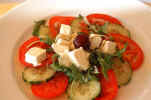
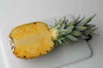

Tomato-Mozarella Salad

List of Ingredients
- Tomato
- Cucumber
- Mozarella
- olive oil
- balsamic vinegar
- pepper
- basil
This is how to make this recipe
- Place tomato slices, alternating with cucumber slices and mozzarella little blocks above on a large serving platter
- Combine oil, balsamic vinegar, salt, and pepper in a jar with a tight-fitting lid; shake well.
- Drizzle over tomatoes and mozzarella; sprinkle with basil./li>
- Enjoy!
Scrambled Eggs
List of Ingredients
This is how to make this recipe
- Put the pan on the stove and heat slightly
- Put a piece of butter ~30g on the pan, allow the butter to melt and grease all the pan
- slightly increase heating to make the pan moderately hot, but not too hot
- Accurately scramble eggs with the knife trying to keep the yolk intact and put the egg's contents on the pan.
- add a little amount of salt ~1/8 of teaspoon according to your taste
- Wait for 2 -3 mins until the protein becomes white
- take the dish from the stove and enjoy!
Pineapple

List of Ingredients
This is how to make this recipe
- Wash pineapple
- Cut it in slices
- Enjoy!